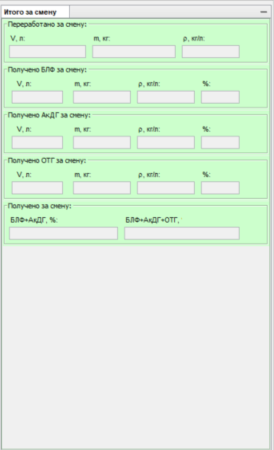
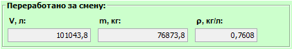
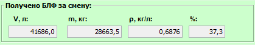
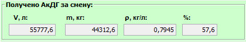
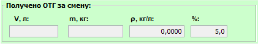
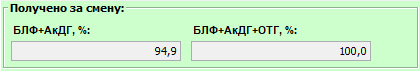

Описание области "Итого за смену"
Внешний вид области "Итого за смену":

Фнукционально область "Итого за смену" можно разделить на следующие подобласти:
- Переработано за смену

Отображает данные опереработанном сырье. Данные поступают автоматически со счетчика поступающего сырья.
- Получено БЛФ за смену

Отображает данные о произведенном БЛФ. Данные поступают автоматически со счетчика отправки БЛФ на ТСП.
Процент произведенного БЛФ расчитывается от массы произведенного БЛФ и массы переработанного сырья.
- Получено АкДГ за смену

Отображает данные о произведенном АкДГ. Данные поступают автоматически со счетчика отправки АкДГ на ТСП.
Процент произведенного АкДГ расчитывается от массы произведенного АкДГ и массы переработанного сырья.
- Получено ОТГ за смену

Отображает данные о произведенном ОТГ. Данные расчитываются автоматически по мере заполнения пользователем соответствующих полей в области данных по переработке.
Процент произведенного ОТГ расчитывается от массы произведенного ОТГ и массы переработанного сырья.
ОТГ, используемый на догрев печи УППГ, в общих показателях производства не учитывается.
- Получено за смену

Отображает процент производства светлых нефтепродуктов и нефтепродуктов в целом от переработки сырья за смену.
ОТГ, используемый на догрев печи УППГ, в общих показателях производства не учитывается.